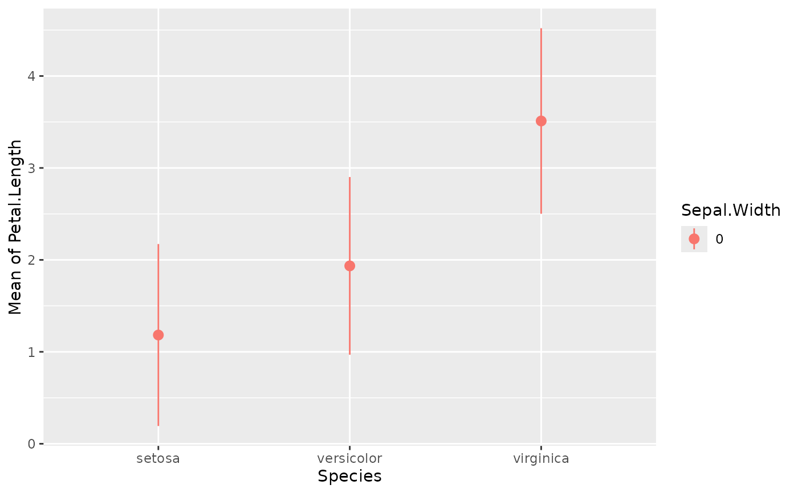

Estimate Marginal Means (Model-based average at each factor level)
Source:R/estimate_means.R
estimate_means.RdEstimate average value of response variable at each factor level or
representative value, respectively at values defined in a "data grid" or
"reference grid". For plotting, check the examples in
visualisation_recipe(). See also other related functions such as
estimate_contrasts() and estimate_slopes().
Arguments
- model
A statistical model.
- by
The (focal) predictor variable(s) at which to evaluate the desired effect / mean / contrasts. Other predictors of the model that are not included here will be collapsed and "averaged" over (the effect will be estimated across them).
bycan be a character (vector) naming the focal predictors, optionally including representative values or levels at which focal predictors are evaluated (e.g.,by="x=c(1,2)"). Whenestimateis not"average", thebyargument is used to create a "reference grid" or "data grid" with representative values for the focal predictors. In this case,bycan also be list of named elements. See details ininsight::get_datagrid()to learn more about how to create data grids for predictors of interest.- predict
Is passed to the
typeargument inemmeans::emmeans()(whenbackend = "emmeans") or inmarginaleffects::avg_predictions()(whenbackend = "marginaleffects"). For emmeans, see also this vignette. Valid options forpredictare:backend = "marginaleffects":predictcan be"response","link","inverse_link"or any validtypeoption supported by model's classpredict()method (e.g., for zero-inflation models from package glmmTMB, you can choosepredict = "zprob"orpredict = "conditional"etc., see glmmTMB::predict.glmmTMB). By default, whenpredict = NULL, the most appropriate transformation is selected, which usually returns predictions or contrasts on the response-scale. The"inverse_link"is a special option, comparable to marginaleffects'invlink(link)option. It will calculate predictions on the link scale and then back-transform to the response scale.backend = "emmeans":predictcan be"response","link","mu","unlink", or"log". Ifpredict = NULL(default), the most appropriate transformation is selected (which usually is"response").
"link"will leave the values on scale of the linear predictors."response"(orNULL) will transform them on scale of the response variable. Thus for a logistic model,"link"will give estimations expressed in log-odds (probabilities on logit scale) and"response"in terms of probabilities. To predict distributional parameters (called "dpar" in other packages), for instance when using complex formulae inbrmsmodels, thepredictargument can take the value of the parameter you want to estimate, for instance"sigma","kappa", etc."response"and"inverse_link"both return predictions on the response scale, however,"response"first calculates predictions on the response scale for each observation and then aggregates them by groups or levels defined inby."inverse_link"first calculates predictions on the link scale for each observation, then aggregates them by groups or levels defined inby, and finally back-transforms the predictions to the response scale. Both approaches have advantages and disadvantages."response"usually produces less biased predictions, but confidence intervals might be outside reasonable bounds (i.e., for instance can be negative for count data). The"inverse_link"approach is more robust in terms of confidence intervals, but might produce biased predictions. In particular for mixed models, using"response"is recommended, because averaging across random effects groups is more accurate.- ci
Confidence Interval (CI) level. Default to
0.95(95%).- estimate
The
estimateargument determines how predictions are averaged ("marginalized") over variables not specified inbyorcontrast(non-focal predictors). It controls whether predictions represent a "typical" individual, an "average" individual from the sample, or an "average" individual from a broader population."typical"(Default): Calculates predictions for a balanced data grid representing all combinations of focal predictor levels (specified inby). For non-focal numeric predictors, it uses the mean; for non-focal categorical predictors, it marginalizes (averages) over the levels. This represents a "typical" observation based on the data grid and is useful for comparing groups. It answers: "What would the average outcome be for a 'typical' observation?". This is the default approach when estimating marginal means using the emmeans package."average": Calculates predictions for each observation in the sample and then averages these predictions within each group defined by the focal predictors. This reflects the sample's actual distribution of non-focal predictors, not a balanced grid. It answers: "What is the predicted value for an average observation in my data?""population": "Clones" each observation, creating copies with all possible combinations of focal predictor levels. It then averages the predictions across these "counterfactual" observations (non-observed permutations) within each group. This extrapolates to a hypothetical broader population, considering "what if" scenarios. It answers: "What is the predicted response for the 'average' observation in a broader possible target population?" This approach entails more assumptions about the likelihood of different combinations, but can be more apt to generalize. This is also the option that should be used for G-computation (Chatton and Rohrer 2024).
You can set a default option for the
estimateargument viaoptions(), e.g.options(modelbased_estimate = "average")- transform
A function applied to predictions and confidence intervals to (back-) transform results, which can be useful in case the regression model has a transformed response variable (e.g.,
lm(log(y) ~ x)). For Bayesian models, this function is applied to individual draws from the posterior distribution, before computing summaries. Can also beTRUE, in which caseinsight::get_transformation()is called to determine the appropriate transformation-function. Note that no standard errors are returned when transformations are applied.- keep_iterations
If
TRUE, will keep all iterations (draws) of bootstrapped or Bayesian models. They will be added as additional columns namediter_1,iter_2, and so on. Ifkeep_iterationsis a positive number, only as many columns as indicated inkeep_iterationswill be added to the output. You can reshape them to a long format by runningbayestestR::reshape_iterations().- backend
Whether to use
"marginaleffects"or"emmeans"as a backend. Results are usually very similar. The major difference will be found for mixed models, wherebackend = "marginaleffects"will also average across random effects levels, producing "marginal predictions" (instead of "conditional predictions", see Heiss 2022).You can set a default backend via
options(), e.g. useoptions(modelbased_backend = "emmeans")to use the emmeans package oroptions(modelbased_backend = "marginaleffects")to set marginaleffects as default backend.- verbose
Use
FALSEto silence messages and warnings.- ...
Other arguments passed, for instance, to
insight::get_datagrid(), to functions from the emmeans or marginaleffects package, or to process Bayesian models viabayestestR::describe_posterior(). Examples:insight::get_datagrid(): Argument such aslength,digitsorrangecan be used to control the (number of) representative values.marginaleffects: Internally used functions are
avg_predictions()for means and contrasts, andavg_slope()for slopes. Therefore, arguments for instance likevcov,equivalence,df,slopeor evennewdatacan be passed to those functions. Aweightsargument is passed to thewtsargument inavg_predictions()oravg_slopes(), however, weights can only be applied whenestimateis"average"or"population"(i.e. for those marginalization options that do not use data grids). Other arguments, such asre.formorallow.new.levels, may be passed topredict()(which is internally used by marginaleffects) if supported by that model class.emmeans: Internally used functions are
emmeans()andemtrends(). Additional arguments can be passed to these functions.Bayesian models: For Bayesian models, parameters are cleaned using
describe_posterior(), thus, arguments like, for example,centrality,rope_range, ortestare passed to that function.
Details
The estimate_slopes(), estimate_means() and estimate_contrasts()
functions are forming a group, as they are all based on marginal
estimations (estimations based on a model). All three are built on the
emmeans or marginaleffects package (depending on the backend
argument), so reading its documentation (for instance emmeans::emmeans(),
emmeans::emtrends() or this website) is
recommended to understand the idea behind these types of procedures.
Model-based predictions is the basis for all that follows. Indeed, the first thing to understand is how models can be used to make predictions (see
estimate_link()). This corresponds to the predicted response (or "outcome variable") given specific predictor values of the predictors (i.e., given a specific data configuration). This is why the concept ofreference grid()is so important for direct predictions.Marginal "means", obtained via
estimate_means(), are an extension of such predictions, allowing to "average" (collapse) some of the predictors, to obtain the average response value at a specific predictors configuration. This is typically used when some of the predictors of interest are factors. Indeed, the parameters of the model will usually give you the intercept value and then the "effect" of each factor level (how different it is from the intercept). Marginal means can be used to directly give you the mean value of the response variable at all the levels of a factor. Moreover, it can also be used to control, or average over predictors, which is useful in the case of multiple predictors with or without interactions.Marginal contrasts, obtained via
estimate_contrasts(), are themselves at extension of marginal means, in that they allow to investigate the difference (i.e., the contrast) between the marginal means. This is, again, often used to get all pairwise differences between all levels of a factor. It works also for continuous predictors, for instance one could also be interested in whether the difference at two extremes of a continuous predictor is significant.Finally, marginal effects, obtained via
estimate_slopes(), are different in that their focus is not values on the response variable, but the model's parameters. The idea is to assess the effect of a predictor at a specific configuration of the other predictors. This is relevant in the case of interactions or non-linear relationships, when the effect of a predictor variable changes depending on the other predictors. Moreover, these effects can also be "averaged" over other predictors, to get for instance the "general trend" of a predictor over different factor levels.
Example: Let's imagine the following model lm(y ~ condition * x) where
condition is a factor with 3 levels A, B and C and x a continuous
variable (like age for example). One idea is to see how this model performs,
and compare the actual response y to the one predicted by the model (using
estimate_expectation()). Another idea is evaluate the average mean at each of
the condition's levels (using estimate_means()), which can be useful to
visualize them. Another possibility is to evaluate the difference between
these levels (using estimate_contrasts()). Finally, one could also estimate
the effect of x averaged over all conditions, or instead within each
condition (using [estimate_slopes]).
Global Options to Customize Estimation of Marginal Means
modelbased_backend:options(modelbased_backend = <string>)will set a default value for thebackendargument and can be used to set the package used by default to calculate marginal means. Can be"marginalmeans"or"emmeans".modelbased_estimate:options(modelbased_estimate = <string>)will set a default value for theestimateargument.
References
Chatton, A. and Rohrer, J.M. 2024. The Causal Cookbook: Recipes for Propensity Scores, G-Computation, and Doubly Robust Standardization. Advances in Methods and Practices in Psychological Science. 2024;7(1). doi:10.1177/25152459241236149
Dickerman, Barbra A., and Miguel A. Hernán. 2020. Counterfactual Prediction Is Not Only for Causal Inference. European Journal of Epidemiology 35 (7): 615–17. doi:10.1007/s10654-020-00659-8
Heiss, A. (2022). Marginal and conditional effects for GLMMs with marginaleffects. Andrew Heiss. doi:10.59350/xwnfm-x1827
Examples
library(modelbased)
# Frequentist models
# -------------------
model <- lm(Petal.Length ~ Sepal.Width * Species, data = iris)
estimate_means(model)
#> We selected `by=c("Species")`.
#> Estimated Marginal Means
#>
#> Species | Mean | SE | 95% CI | t(144)
#> ------------------------------------------------
#> setosa | 1.43 | 0.08 | [1.28, 1.58] | 18.70
#> versicolor | 4.50 | 0.07 | [4.35, 4.65] | 60.64
#> virginica | 5.61 | 0.06 | [5.50, 5.72] | 99.61
#>
#> Variable predicted: Petal.Length
#> Predictors modulated: Species
#> Predictors averaged: Sepal.Width (3.1)
#>
# the `length` argument is passed to `insight::get_datagrid()` and modulates
# the number of representative values to return for numeric predictors
estimate_means(model, by = c("Species", "Sepal.Width"), length = 2)
#> Estimated Marginal Means
#>
#> Species | Sepal.Width | Mean | SE | 95% CI | t(144)
#> --------------------------------------------------------------
#> setosa | 2.00 | 1.35 | 0.21 | [0.92, 1.77] | 6.28
#> versicolor | 2.00 | 3.61 | 0.15 | [3.33, 3.90] | 24.81
#> virginica | 2.00 | 4.88 | 0.17 | [4.54, 5.23] | 27.92
#> setosa | 4.40 | 1.54 | 0.15 | [1.24, 1.84] | 10.19
#> versicolor | 4.40 | 5.63 | 0.29 | [5.05, 6.20] | 19.34
#> virginica | 4.40 | 6.53 | 0.25 | [6.04, 7.02] | 26.19
#>
#> Variable predicted: Petal.Length
#> Predictors modulated: Species, Sepal.Width
#>
# an alternative way to setup your data grid is specify the values directly
estimate_means(model, by = c("Species", "Sepal.Width = c(2, 4)"))
#> Estimated Marginal Means
#>
#> Species | Sepal.Width | Mean | SE | 95% CI | t(144)
#> --------------------------------------------------------------
#> setosa | 2 | 1.35 | 0.21 | [0.92, 1.77] | 6.28
#> versicolor | 2 | 3.61 | 0.15 | [3.33, 3.90] | 24.81
#> virginica | 2 | 4.88 | 0.17 | [4.54, 5.23] | 27.92
#> setosa | 4 | 1.51 | 0.10 | [1.31, 1.70] | 15.19
#> versicolor | 4 | 5.29 | 0.22 | [4.85, 5.73] | 23.78
#> virginica | 4 | 6.26 | 0.18 | [5.89, 6.62] | 34.11
#>
#> Variable predicted: Petal.Length
#> Predictors modulated: Species, Sepal.Width = c(2, 4)
#>
# or use one of the many predefined "tokens" that help you creating a useful
# data grid - to learn more about creating data grids, see help in
# `?insight::get_datagrid`.
estimate_means(model, by = c("Species", "Sepal.Width = [fivenum]"))
#> Estimated Marginal Means
#>
#> Species | Sepal.Width | Mean | SE | 95% CI | t(144)
#> --------------------------------------------------------------
#> setosa | 2.00 | 1.35 | 0.21 | [0.92, 1.77] | 6.28
#> versicolor | 2.00 | 3.61 | 0.15 | [3.33, 3.90] | 24.81
#> virginica | 2.00 | 4.88 | 0.17 | [4.54, 5.23] | 27.92
#> setosa | 2.80 | 1.41 | 0.11 | [1.20, 1.62] | 13.28
#> versicolor | 2.80 | 4.29 | 0.05 | [4.18, 4.39] | 78.28
#> virginica | 2.80 | 5.43 | 0.06 | [5.31, 5.56] | 87.55
#> setosa | 3.00 | 1.43 | 0.08 | [1.26, 1.59] | 17.27
#> versicolor | 3.00 | 4.45 | 0.07 | [4.32, 4.59] | 65.68
#> virginica | 3.00 | 5.57 | 0.05 | [5.46, 5.68] | 101.89
#> setosa | 3.30 | 1.45 | 0.06 | [1.34, 1.57] | 25.21
#> versicolor | 3.30 | 4.70 | 0.11 | [4.49, 4.92] | 43.66
#> virginica | 3.30 | 5.78 | 0.08 | [5.62, 5.93] | 74.17
#> setosa | 4.40 | 1.54 | 0.15 | [1.24, 1.84] | 10.19
#> versicolor | 4.40 | 5.63 | 0.29 | [5.05, 6.20] | 19.34
#> virginica | 4.40 | 6.53 | 0.25 | [6.04, 7.02] | 26.19
#>
#> Variable predicted: Petal.Length
#> Predictors modulated: Species, Sepal.Width = [fivenum]
#>
# \dontrun{
# same for factors: filter by specific levels
estimate_means(model, by = "Species=c('versicolor', 'setosa')")
#> Estimated Marginal Means
#>
#> Species | Mean | SE | 95% CI | t(144)
#> ------------------------------------------------
#> versicolor | 4.50 | 0.07 | [4.35, 4.65] | 60.64
#> setosa | 1.43 | 0.08 | [1.28, 1.58] | 18.70
#>
#> Variable predicted: Petal.Length
#> Predictors modulated: Species=c('versicolor', 'setosa')
#> Predictors averaged: Sepal.Width (3.1)
#>
estimate_means(model, by = c("Species", "Sepal.Width=0"))
#> Estimated Marginal Means
#>
#> Species | Sepal.Width | Mean | SE | 95% CI | t(144)
#> --------------------------------------------------------------
#> setosa | 0 | 1.18 | 0.50 | [0.19, 2.17] | 2.36
#> versicolor | 0 | 1.93 | 0.49 | [0.97, 2.90] | 3.96
#> virginica | 0 | 3.51 | 0.51 | [2.50, 4.52] | 6.88
#>
#> Variable predicted: Petal.Length
#> Predictors modulated: Species, Sepal.Width=0
#>
# estimate marginal average of response at values for numeric predictor
estimate_means(model, by = "Sepal.Width", length = 5)
#> Estimated Marginal Means
#>
#> Sepal.Width | Mean | SE | 95% CI | t(144)
#> -------------------------------------------------
#> 2.00 | 3.28 | 0.10 | [3.07, 3.49] | 31.48
#> 2.60 | 3.60 | 0.06 | [3.49, 3.71] | 64.21
#> 3.20 | 3.92 | 0.04 | [3.84, 4.01] | 89.81
#> 3.80 | 4.25 | 0.08 | [4.08, 4.41] | 50.21
#> 4.40 | 4.57 | 0.14 | [4.30, 4.84] | 33.25
#>
#> Variable predicted: Petal.Length
#> Predictors modulated: Sepal.Width
#> Predictors averaged: Species
#>
estimate_means(model, by = "Sepal.Width=c(2, 4)")
#> Estimated Marginal Means
#>
#> Sepal.Width | Mean | SE | 95% CI | t(144)
#> -------------------------------------------------
#> 2 | 3.28 | 0.10 | [3.07, 3.49] | 31.48
#> 4 | 4.35 | 0.10 | [4.15, 4.55] | 42.81
#>
#> Variable predicted: Petal.Length
#> Predictors modulated: Sepal.Width=c(2, 4)
#> Predictors averaged: Species
#>
# or provide the definition of the data grid as list
estimate_means(
model,
by = list(Sepal.Width = c(2, 4), Species = c("versicolor", "setosa"))
)
#> Estimated Marginal Means
#>
#> Sepal.Width | Species | Mean | SE | 95% CI | t(144)
#> --------------------------------------------------------------
#> 2 | versicolor | 3.61 | 0.15 | [3.33, 3.90] | 24.81
#> 4 | versicolor | 5.29 | 0.22 | [4.85, 5.73] | 23.78
#> 2 | setosa | 1.35 | 0.21 | [0.92, 1.77] | 6.28
#> 4 | setosa | 1.51 | 0.10 | [1.31, 1.70] | 15.19
#>
#> Variable predicted: Petal.Length
#> Predictors modulated: Sepal.Width = c(2, 4), Species = c('versicolor', 'setosa')
#>
# Methods that can be applied to it:
means <- estimate_means(model, by = c("Species", "Sepal.Width=0"))
plot(means) # which runs visualisation_recipe()

standardize(means)
#> Estimated Marginal Means (standardized)
#>
#> Species | Sepal.Width | Mean | SE | 95% CI | t(144)
#> -----------------------------------------------------------------
#> setosa | -7.01 | -1.46 | 0.28 | [-2.02, -0.90] | 2.36
#> versicolor | -7.01 | -1.03 | 0.28 | [-1.58, -0.49] | 3.96
#> virginica | -7.01 | -0.14 | 0.29 | [-0.71, 0.43] | 6.88
#>
#> Variable predicted: Petal.Length
#> Predictors modulated: Species, Sepal.Width=0
#>
# grids for numeric predictors, combine range and length
model <- lm(Sepal.Length ~ Sepal.Width * Petal.Length, data = iris)
# range from minimum to maximum spread over four values,
# and mean +/- 1 SD (a total of three values)
estimate_means(
model,
by = c("Sepal.Width", "Petal.Length"),
range = c("range", "sd"),
length = c(4, 3)
)
#> Estimated Marginal Means
#>
#> Sepal.Width | Petal.Length | Mean | SE | 95% CI | t(146)
#> ----------------------------------------------------------------
#> 2.00 | 1.99 | 4.23 | 0.13 | [3.98, 4.48] | 33.47
#> 2.80 | 1.99 | 4.79 | 0.06 | [4.66, 4.91] | 76.04
#> 3.60 | 1.99 | 5.34 | 0.05 | [5.25, 5.43] | 116.74
#> 4.40 | 1.99 | 5.90 | 0.10 | [5.70, 6.10] | 57.96
#> 2.00 | 3.76 | 5.23 | 0.08 | [5.07, 5.38] | 67.09
#> 2.80 | 3.76 | 5.67 | 0.03 | [5.61, 5.74] | 169.13
#> 3.60 | 3.76 | 6.12 | 0.05 | [6.02, 6.23] | 117.07
#> 4.40 | 3.76 | 6.57 | 0.10 | [6.36, 6.78] | 62.95
#> 2.00 | 5.52 | 6.22 | 0.12 | [5.98, 6.46] | 51.44
#> 2.80 | 5.52 | 6.56 | 0.04 | [6.47, 6.65] | 148.72
#> 3.60 | 5.52 | 6.90 | 0.08 | [6.74, 7.07] | 82.43
#> 4.40 | 5.52 | 7.24 | 0.17 | [6.90, 7.58] | 41.93
#>
#> Variable predicted: Sepal.Length
#> Predictors modulated: Sepal.Width, Petal.Length
#>
data <- iris
data$Petal.Length_factor <- ifelse(data$Petal.Length < 4.2, "A", "B")
model <- lme4::lmer(
Petal.Length ~ Sepal.Width + Species + (1 | Petal.Length_factor),
data = data
)
estimate_means(model)
#> We selected `by=c("Species")`.
#> Estimated Marginal Means
#>
#> Species | Mean | SE | 95% CI | t(144)
#> ------------------------------------------------
#> setosa | 1.67 | 0.34 | [1.00, 2.35] | 4.88
#> versicolor | 4.27 | 0.34 | [3.61, 4.94] | 12.69
#> virginica | 5.25 | 0.34 | [4.58, 5.92] | 15.45
#>
#> Variable predicted: Petal.Length
#> Predictors modulated: Species
#> Predictors averaged: Sepal.Width (3.1), Petal.Length_factor
#>
estimate_means(model, by = "Sepal.Width", length = 3)
#> Estimated Marginal Means
#>
#> Sepal.Width | Mean | SE | 95% CI | t(144)
#> -------------------------------------------------
#> 2.00 | 3.40 | 0.35 | [2.72, 4.09] | 9.84
#> 3.20 | 3.78 | 0.33 | [3.12, 4.43] | 11.35
#> 4.40 | 4.15 | 0.35 | [3.45, 4.85] | 11.70
#>
#> Variable predicted: Petal.Length
#> Predictors modulated: Sepal.Width
#> Predictors averaged: Species, Petal.Length_factor
#>
# }